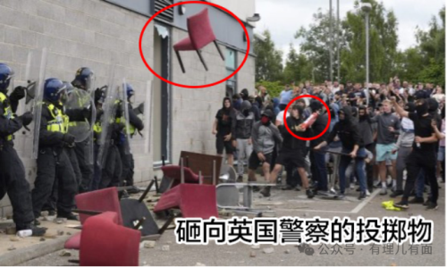
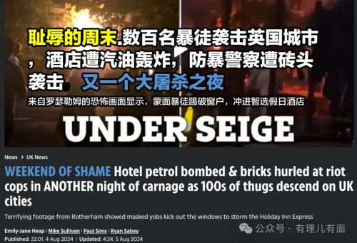
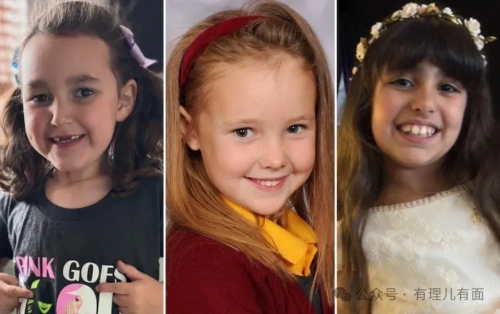
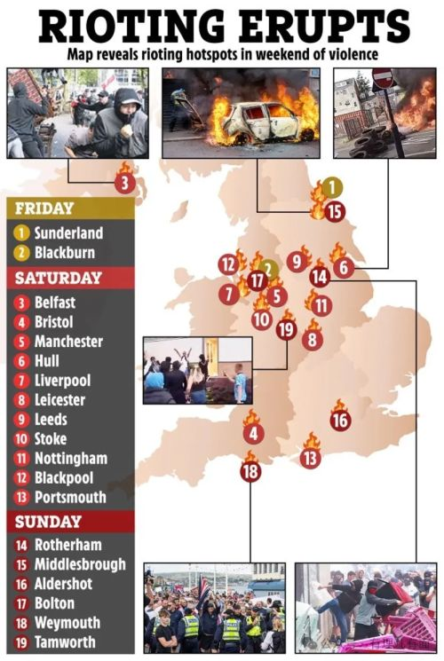
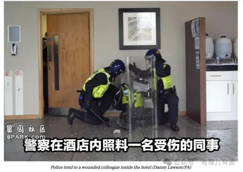
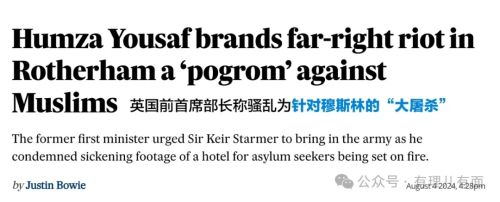
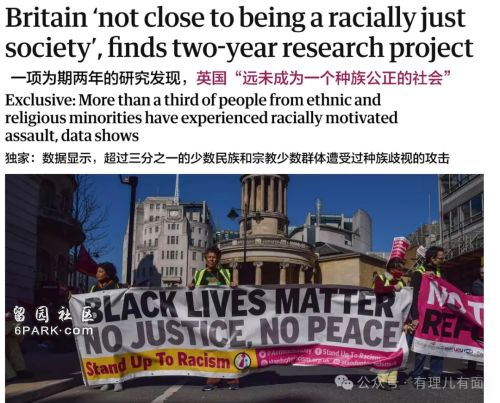

看看这些触目惊心的照片，谁能相信，这混乱不堪、满目疮痍的画面，竟会是“日不落”帝国此刻的真实写照？

据路透社8月3日报道，英国多个城市爆发了13年来规模最大、最严重的全国性骚乱。街头巷尾火光冲天，警方成被“围攻对象”，警局成火海。
英国前首席部长胡姆扎·尤素夫称，这个事件是针对穆斯林的“大屠杀”。

说起此事根源，还得追溯至七月末。
7月29日，英国绍斯波特镇的宁静被突如其来的暴力撕裂。一名17岁少年，手持利刃，闯入了本应充满欢声笑语的儿童舞蹈班行凶，导致三名无辜孩童丧生，多人受伤，哀伤与愤怒笼罩了整个社区。

然而，就在人们尚未从悲痛中走出之时，互联网的角落里，已有人开始编织谎言，企图祸水东引、煽动仇恨。他们声称凶手是叙利亚穆斯林移民，是来英国避难的“入侵者”，并以此为由，号召民众“保护我们的孩子”，实则是为一场预谋的骚乱煽风点火。
尽管警方迅速辟谣，指出凶手实为英国本土出生、卢旺达裔的少年，但这些真相在汹涌的谣言面前显得如此无力。谣言如同野火般蔓延，迅速点燃了民众心中的恐惧与愤怒，一场本可避免的全国性骚乱就此爆发。
英国国内反移民与反穆斯林情绪持续发酵，抗议活动非但未能平息，反而愈演愈烈，化作暴力狂潮，放火、抢劫、打砸等全套“动作戏”轮番上阵，直接把英国社会给震懵了。刚过去的周末，极右翼势力的阴影笼罩英国，他们策划了超过30场示威，意图将不满与仇恨推向高潮。
赫尔、利物浦、布里斯托尔、曼彻斯特、特伦特河畔斯托克和贝尔法斯特，这些城市的名字，不再只是地图上的坐标，而是暴力风暴中的孤岛，哀嚎与混乱交织成一幅末日景象。
用佩洛西的来话，真是“靓丽的风景线”。

在这几日的暴乱中，数千名抗议者与警方爆发了激烈的肢体冲突。
商店被洗劫一空，“零元购”各地上演，建筑物在熊熊烈火中化为灰烬，英格兰北部的桑德兰警察局大楼也未能逃脱，被暴徒纵火焚烧。
而在7月31日夜，伦敦的心脏地带，首相官邸周遭也受到了燃烧瓶的照顾。警察成为靶子，各地警力直呼“命悬一线”。
在这场混乱中，英国警察首当其冲。
据英国媒体报道，有39名警察受伤，27人被送往医院。而在罗瑟勒姆的街头，更是惨烈，700人的愤怒人潮，将10名警察淹没，其中一名警察更是被打至昏迷，其他警官则被打到骨折或骨裂。
另一方面，英国国家警察局长委员会表示，自周六晚间以来已有 147 人被捕。但这只是开始，未来的日子里，这个数字或许还将继续攀升。
暴力，似乎成了解决不满的唯一途径，而这，无疑是对英国社会最深刻的讽刺。

英国上一次爆发暴力抗议是在 2011 年，当时伦敦一名黑人男子被警察枪杀，数千人走上街头抗议。。
在这场由偏见与仇恨引发的灾难中,究竟是什么让英国社会走到了今天这一步？
是长期积累的种族矛盾？
还是政治极化导致的极端情绪？
巴基斯坦《国家报》4日指出，英国，这个长期自诩为西方文明价值观典范的国家，如今却深陷混乱之中，这种局面在过去往往更多地与局势脆弱的发展中国家相关联。这深刻揭示了英国社会内部正面临的深刻危机，特别是反移民和反伊斯兰情绪的抬头，以及部分地区沦为暴力战场的现实。对于新上任的斯塔默政府而言，这无疑是其执政初期遭遇的首次重大挑战。

近年来，英国社会的种族矛盾日益凸显，反移民和反伊斯兰的暗流逐渐浮出水面，这不仅体现在频繁发生的种族冲突和仇恨犯罪上，更深刻地反映在社会各领域的隐性歧视和偏见中。
英国作为一个多元文化的国家，其种族多样性既是其社会活力的源泉，也是矛盾冲突的温床。历史上，英国社会曾长期存在种族不平等和歧视现象，这些问题并未随着时代的进步而完全消除，种族歧视在英国依然普遍存在。
根据英国《卫报》披露的一份研究报告，超过三分之一的少数族裔在英国经历过种族侮辱，17%的受访者表示他们的住所曾遭种族歧视者破坏。这些数据不仅揭示了英国社会种族歧视的严重程度，也反映了英国政府在消除种族不公方面的软弱无力和视而不见。新冠疫情期间，针对亚洲族裔的虐待事件更是激增，进一步加剧了种族矛盾的紧张态势。

英国社会的种族矛盾不仅体现在日常生活中，还渗透到了教育、职场、住房、警民互动等多个领域。少数族裔群体在教育资源、就业机会、住房条件等方面常常面临不公平待遇，这些不公平现象进一步加剧了他们的不满和愤怒。
这些裂痕在特定事件或政策的刺激下很容易被激发，导致社会动荡。
与此同时，英国政治生态的极化现象也愈发严重。
不同政治派别之间的对立和冲突不断升级，政客们往往利用“文化战争”等议题来转移公众对其他重要问题的关注，以此作为政治策略的一部分。
保守派议员尤其成为这种争论的焦点，他们的言论和行为往往加剧了社会的分裂和对抗。这种政治极化不仅削弱了政府的决策能力，也破坏了社会的和谐与稳定。
英国《独立报》去年11月的报道揭示了另一个令人担忧的趋势：越来越多的英国人认为政客们正在利用“文化战争”议题来分散注意力。
这种策略不仅让公众忽视了诸如经济、教育、医疗等更为紧迫的问题，还加剧了社会内部的分歧和矛盾。政客们通过炒作文化议题来巩固自己的选民基础，却忽视了解决实际问题的紧迫性。
英国，这个曾经引领工业革命、推动全球现代化的国家，却在“脱欧”的灾难性决定后步履蹒跚，如今又深陷生活成本危机的泥潭。民众的不满与愤怒如同干柴烈火，只需一丝火星便能燎原。而极右翼势力的仇外情绪，正是那不断寻找机会的火星，企图在这片土地上点燃一场无法控制的大火。
英国真正的危机不在于骚乱的表面，而在于其能否正视并修复长期被忽视的社会裂痕，重建包容与多元的社会基石。
很显然，高高在上的英国政客们不太关心这些，其国内爆发内战的风险亦非空穴来风。